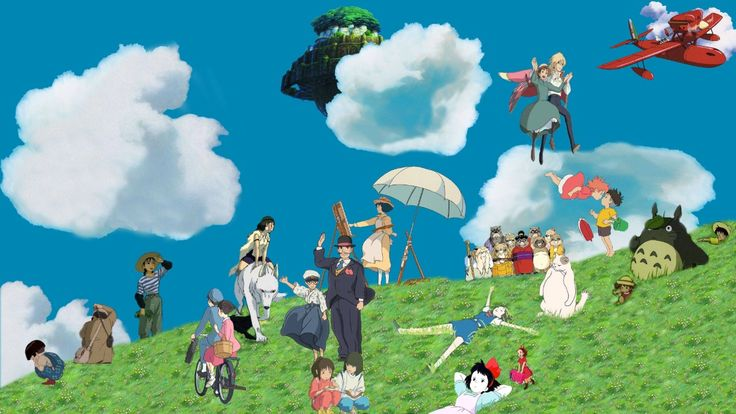

El Studio Ghibli (スタジオジブリ Sutajio Jiburi?) es un estudio de animación japonés,
con sede en Tokio. Fue fundada en
1985 por Hayao Miyazaki y Isao Takahata, y a día de hoy, han realizado más de 23 películas,
además de algunas otras
clases de trabajos (cortometrajes, anuncios publicitarios, ...). Tienen el respeto del público
japonés y también el internacional,
donde la crítica y el sector de la animación le presenta muchos respetos. Debido a su
popularidad, se abrió el Museo Ghibli,
el cual se encuentra a las afueras de Tokio y para el 2022 se espera tener listo el
Ghibli Park.
El nombre de Ghibli se basa en el nombre arábico del siroco, o viento mediterráneo, que fue utilizado por
los italianos para
nombrar a sus aviones de exploración del Sahara en la Segunda Guerra Mundial. La teoría de este nombre,
sería que ellos
están «Soplando» un nuevo aire dentro de la industria de la animación.

Keila Zeret Hernández León